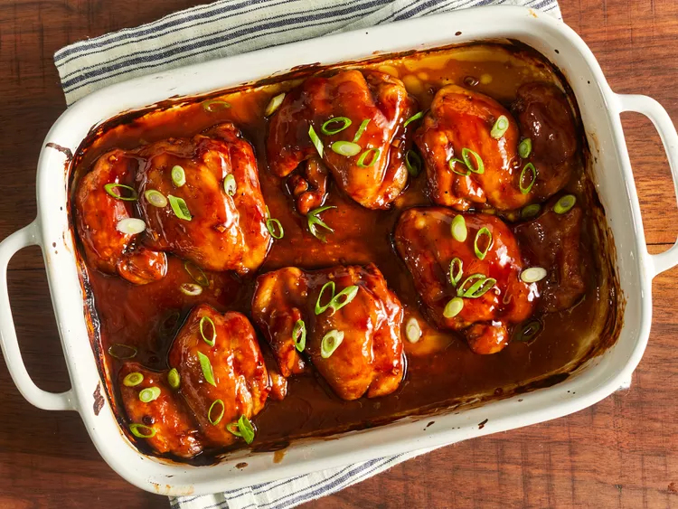

This teriyaki chicken recipe uses a homemade teriyaki sauce to glaze
chicken thighs that are baked in the oven for the most delicious sticky
chicken. This is a much-requested recipe in our house! Easy to double for
a large group.

Ingredients
- ½ cup white sugar
- ½ cup soy sauce
- ¼ cup cider vinegar
- 1 tablespoon cornstarch
- 1 tablespoon cold water
- 1 clove garlic, minced
- ½ teaspoon ground ginger
- ¼ teaspoon ground black pepper
- 12 boneless, skinless chicken thighs
How to Make Teriyaki Chicken
Here's a very brief overview of what you can expect when you make homemade
lasagna:
- Make the meat sauce.
- Cook the noodles.
- Make the ricotta mixture.
- Layer the lasagna according to the recipe instructions.
- Cover with foil and bake.
- Let the lasagna rest before serving.
Return to top
Return to home